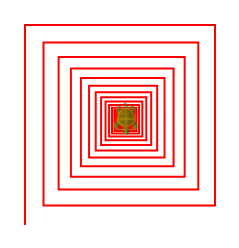
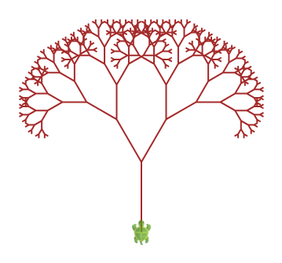
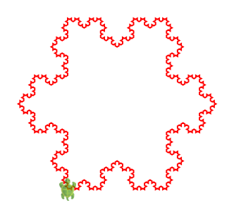

Bir işlev kendi kendini çağırabilir. Kardeş kitapçıkta bu fikri sayılarla ve kulelerle ehlileştirmiştik; burada bir üstünlüğümüz var: özyinelemeyi çizdireceğiz. Sarmallar, ağaçlar ve bir kar tanesi — kendini çağıran işlevin neye benzediğini gözünüzle göreceksiniz. Sonra da onu unutkanlıktan kurtarıp kırk bin kat hızlandıracağız.
Bölüm III'ün sonunda bizimYinele kendini çağırmıştı. Genel
kural şu: her özyinelemeli işlevin iki parçası vardır ve
ikisi de olmazsa olmaz:
İlk örneğimiz çizsin de görelim: her turda biraz kısalan bir sarmal.
tanım sarmal(boy: Kesir): Birim =
eğer (boy > 2) { // TABAN: boy 2'ye düşünce dur
ileri(boy)
sağ()
sarmal(boy * 0.95) // ADIM: biraz küçüğünü çiz
}
sil(); canlandırmaHızınıKur(10)
sarmal(200)
Tuvalde içe içe kıvrılan bir kare sarmalı belirecek. Şimdi kodda iki küçük
deney yapın: taban koşulunu boy > 150 yapın — sarmal
üç-beş çizgide bitiyor. Sonra boy * 0.95'i
boy yapın; yani küçülmeyi kaldırın. Koco bir süre sonra
programı durduracaktır: küçülmeyen özyineleme hiç durmaz, buna
çarpılmadan öğrenmenin en ucuz yolu da bir çizim programıdır.
Özyinelemede hataların şahı, taban durumunu unutmak ya da yanlış yazmaktır. Alışkanlık edinin: özyinelemeli bir işlev yazarken ilk yazdığınız satır taban olsun. Kardeş kitapçık da aynı cümleyi kurar; iki dilde de doğru olan cümleler en değerlileridir.
Sarmalda işlev kendini bir kere çağırdı. Ya iki kere çağırırsa? Gövdeden iki dal, her daldan iki dal daha… Bu bir ağaç:
tanım ağaç(boy: Kesir): Birim =
eğer (boy > 4) {
ileri(boy) // gövdeyi çiz
sol(30)
ağaç(boy * 0.7) // sol dal: küçük bir ağaç!
sağ(60)
ağaç(boy * 0.7) // sağ dal: bir küçük ağaç daha
sol(30)
geri(boy) // GERİ DÖN: geldiğin gibi bırak
}
sil(); canlandırmaHızınıKur(1)
kalemRenginiKur(kahverengi)
ağaç(90)
Tanım bir cümle: ağaç, ucunda iki küçük ağaç taşıyan bir gövdedir.
Saçma gibi duran bu cümle, ekranda gerçek bir ağaca dönüşüyor.
Son satırdaki geri(boy) hayati: her dal, kaplumbağayı
bulduğu yere geri bırakıyor ki kardeş dal doğru yerden
başlasın. Kardeş kitapçıktaki geri dönüşlü aramanın
“bıraktığın gibi bırak” kuralı, işte bu geri.
Kapaktaki kar tanesine geldik. Kural tek cümle: bir doğru parçası al, ortadaki üçte birini kes, yerine iki kenarlı bir çatı koy — sonra aynı şeyi yeni parçaların her birine yap.
tanım koh(boy: Kesir, derinlik: Sayı): Birim =
eğer (derinlik == 0)
ileri(boy) // TABAN: düz çizgi
yoksa {
koh(boy / 3, derinlik - 1); sol(60)
koh(boy / 3, derinlik - 1); sağ(120)
koh(boy / 3, derinlik - 1); sol(60)
koh(boy / 3, derinlik - 1)
}
sil(); canlandırmaHızınıKur(0)
yinele(3) { // üç kenarlı "üçgen", her kenarı bir koh eğrisi
koh(243, 4)
sağ(120)
}
derinlik = 4: üç koh eğrisi,
120'şer derece dönerek kapanıyor. Kapaktaki tanenin ta kendisi.
derinlik girdisine dikkat: bu sefer küçülen şey uzunluk değil,
derinliğin kendisi. Sıfırda düz çizgi çiziyoruz; her
derinlik katı, çizgiyi dört parçalı bir kıvrıma çeviriyor.
derinlik = 0, 1, 2, 3, 4 için ayrı ayrı çalıştırın ve
şeklin nasıl “pürüzlendiğini” izleyin.
Böyle şekillere fraktal deniyor: neresine yaklaşırsanız yaklaşın aynı deseni görürsünüz, çünkü tanımı kendine yapılmış bir göndermeden ibaret. Özyinelemeli kod ile fraktal, aynı fikrin biri yazıyla biri çizgiyle hâli.
Her derinlik katı çizgi sayısını dörde katlar: derinlik 4'te
3 × 4⁴ = 768 çizgi. Derinlik 10'da üç milyondan
fazla. Özyinelemenin büyüme hızıyla ilk tanışmanız bu olsun;
Hanoi'de sayılar daha da çılgınlaşacak.
Çizimden sayıya dönelim; klasiklerin klasiği. Üç çubuk, birincisinde büyükten küçüğe n disk; hepsi üçüncü çubuğa taşınacak. Her seferinde tek disk, büyük disk küçüğün üstüne asla.
den adım = 0
tanım taşı(n: Sayı, kaynak: Sayı, hedef: Sayı, yardımcı: Sayı): Birim =
eğer (n > 0) { // taban: taşınacak disk kalmadı
taşı(n - 1, kaynak, yardımcı, hedef) // üstteki n-1 diski kenara çek
adım = adım + 1
satıryaz(s"$adım) $n. diski $kaynak -> $hedef")
taşı(n - 1, yardımcı, hedef, kaynak) // n-1 diski üstüne koy
}
taşı(3, 1, 3, 2)1) 1. diski 1 -> 3
2) 2. diski 1 -> 2
3) 1. diski 3 -> 2
4) 3. diski 1 -> 3
5) 1. diski 2 -> 1
6) 2. diski 2 -> 3
7) 1. diski 1 -> 3
Yedi adım; genel olarak 2ⁿ − 1. Kardeş kitapçıkta anlattığım
efsaneyi burada da analım: 64 diskli kulenin bitişi, saniyede bir hamleyle
yaklaşık 584 milyar yıl sürer. Rahat olun, kimse
beklemiyor.
Bölüm II'de demiştik: her dizin ya Boştur ya da “baş
ve gerisi”. Bu, özyineleme için biçilmiş kaftan — ve
eşle/durum (match/case)
eşleştirmesiyle birleşince tanımlar şiire dönüyor:
tanım toplam(d: Dizin[Sayı]): Sayı = d eşle {
durum Boş => 0 // TABAN: boş dizinin toplamı
durum baş :: gerisi => baş + toplam(gerisi) // ADIM
}
tanım altKümeler(d: Dizin[Sayı]): Dizin[Dizin[Sayı]] = d eşle {
durum Boş => Dizin(Boş) // boş kümenin tek altkümesi var: kendisi
durum baş :: gerisi =>
dez başsızlar = altKümeler(gerisi) // başı ALMAYANLAR
başsızlar ++ başsızlar.işle(ak => baş :: ak) // ve başı ALANLAR
}
satıryaz(toplam(Dizin(3, 1, 2))) // 6
satıryaz(altKümeler(Dizin(3, 1, 2)).boyu) // 8 = 2³
altKümeler'i kardeş kitapçıkla karşılaştırın: orada
“al ya da alma” kararını bir gezi kalıbıyla, geri alma
satırlarıyla yazmıştık. Burada karar iki yarımın birleşimi olarak
tanımlanıyor: başı almayan altkümeler, bir de başı eklenmiş
hâlleri. Geri alacak bir şey yok, çünkü kimse bir şeyi değiştirmedi.
İşlevsel üslubun özyinelemeyle arası işte bu yüzden çok iyi.
Özyinelemenin tuzağına gelme sırası bizde. Fibonaççi'yi tanımıyla yazalım:
tanım fibYavaş(n: Sayı): Uzun =
eğer (n < 2) n
yoksa fibYavaş(n - 1) + fibYavaş(n - 2)
Doğru — ama fibYavaş(45) deyin ve çayınızı koyun.
Sağdaki iki çağrı ikiye, dörde, sekize çatallanıyor ve aynı değerler
milyonlarca kere yeniden hesaplanıyor. Çare, kardeş kitapçıktakiyle
birebir aynı: hesapladığını bir kenara yaz
(memoizasyon). Kenar defterimiz bir eşlem:
dez bellek = Eşlem[Sayı, Uzun]()
tanım fibHızlı(n: Sayı): Uzun =
eğer (n < 2) n
yoksa bellek.alYoksa(n, {
dez sonuç = fibHızlı(n - 1) + fibHızlı(n - 2)
bellek.eşEkle(n -> sonuç)
sonuç
})
satıryaz(fibHızlı(45)) // 1134903170, göz açıp kapayana kadar
satıryaz(fibHızlı(90)) // 2880067194370816120 -- Uzun'a sığıyor, ucu ucuna
alYoksa(n, …) şunu diyor: defterde n varsa onu
ver; yoksa şu bloğu çalıştır. Blok da hesaplayıp deftere yazıyor.
fibYavaş(45) için çağrı sayısı iki milyarı geçer;
fibHızlı(45) doksan küsur çağrıyla biter. Aradaki fark,
Bölüm III'teki tabloların diliyle: milyonlarca kat — ve tek
kuruşluk fikir: aynı işi iki kere yapma.
Bu fikrin bir adı ve koca bir bölümü var: dinamik programlama. Bölüm VI'da oraya döneceğiz.
Biriniz fibYavaş(40)'ı başlatsın; süre işlerken öteki
fibHızlı'yı yazsın. Hangisi önce bitirir? Bu yarış
“algoritma seçimi” dersinin tamamıdır ve unutulmaz.
sol(90); ileri; sağ(90); ileri;
sağ(90); ileri; sol(90) gibi. Ortaya çıkan şekle bakın;
derinlik 3'te kaç çizgi çizildi?
zıpla ve
konumVeYönüBelleğeYaz/konumVeYönüGeriYükle
işinizi kolaylaştırır.
altKümeler'in kardeşi
permütasyonlar(d: Dizin[Sayı])'ı yazın: bütün
sıralanışlar. ipucu Başı sırayla her öge yapıp
gerisinin permütasyonlarının önüne ekleyin. Dizin(1,2,3)
için 6 tane çıkmalı — belirt ile sınayın.
altKümeler tam bu iş için. n ≤ 20 sınırına
dikkat: 2²⁰ bir milyon — bilgisayarınıza göre
çerez. devamı Aynı soruyu kardeş kitapçığın
IV. bölümündeki gibi C++ ile de çözüp iki kodu yan yana koyun.